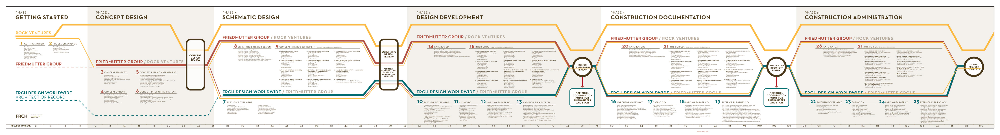

The flow chart below outlines the overall process and the related responsibilities for the AOR position for a new casino resort. The process is focused on three key entities: the owner, the signature designer and the AOR consultant team leader.
AOR CASINO RESORT PROCESS DOCUMENT
